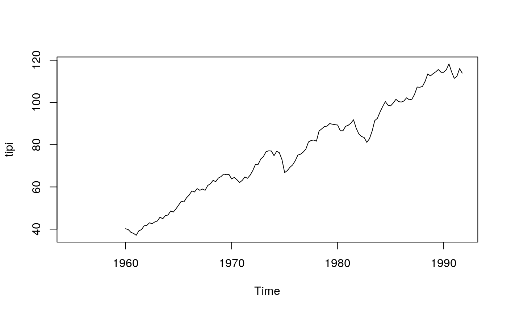
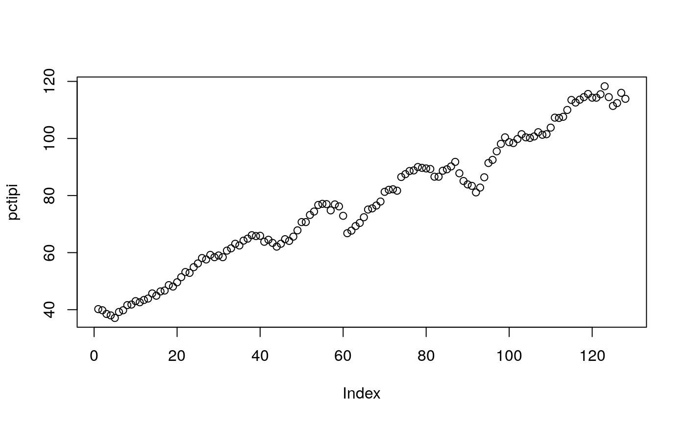

vignettes/pcts_data.Rmd
pcts_data.Rmdlibrary(pcts) #> #> Attaching package: 'pcts' #> The following object is masked from 'package:base': #> #> date pd <- packageDescription("pcts")
This vignette is part of package pcts, version 0.15-0.
The intended mode of work with time series in package pcts() is that users create periodic time series using function pcts() and then operate on the object created by it. pcts() accepts base R data objects, such as “ts”, “mts”, “numeric2,”matrix2, “data. frame”, as well as some time series classes with regular time from other packages, including “zooreg” (other classes can be added if required).
Package pcts provides two native classes for periodic time series: “PeriodicTS” and “PeriodicMTS” for univariate and multivariate time series, respectively. There are also some classes serving as wrappers for the base “ts” and “mts” classes and some classes from other packages, such as “zoo”, if the original classes need to be preserved.
When supplied with a time series object, pcts() gets the time information from it. For example, the AirPassengers is a monthly time series starting in {r} start(AirPassengers) from base R, so it is converted to a periodic time series with a monthly cycle and the same start time:
ap <- pcts(AirPassengers) ap #> An object of class "PeriodicTS" #> Slot "cycle": Start: 1949 January #> Cycle: MonthYearCycle #> Number of seasons: 12 #> #> Jan Feb Mar Apr May Jun Jul Aug Sep Oct Nov Dec #> 1949 112 118 132 129 121 135 148 148 136 119 104 118 #> 1950 115 126 141 135 125 149 170 170 158 133 114 140 #> 1951 145 150 178 163 172 178 199 199 184 162 146 166 #> 1952 171 180 193 181 183 218 230 242 209 191 172 194 #> 1953 196 196 236 235 229 243 264 272 237 211 180 201 #> 1954 204 188 235 227 234 264 302 293 259 229 203 229 #> 1955 242 233 267 269 270 315 364 347 312 274 237 278 #> 1956 284 277 317 313 318 374 413 405 355 306 271 306 #> 1957 315 301 356 348 355 422 465 467 404 347 305 336 #> 1958 340 318 362 348 363 435 491 505 404 359 310 337 #> 1959 360 342 406 396 420 472 548 559 463 407 362 405 #> 1960 417 391 419 461 472 535 622 606 508 461 390 432
Get the data from Mar 1952 to Feb 1959:
window(ap, start = c(1952, 3)) #> An object of class "PeriodicTS" #> Slot "cycle": Start: 1952 March #> Cycle: MonthYearCycle #> Number of seasons: 12 #> #> Jan Feb Mar Apr May Jun Jul Aug Sep Oct Nov Dec #> 1952 193 181 183 218 230 242 209 191 172 194 #> 1953 196 196 236 235 229 243 264 272 237 211 180 201 #> 1954 204 188 235 227 234 264 302 293 259 229 203 229 #> 1955 242 233 267 269 270 315 364 347 312 274 237 278 #> 1956 284 277 317 313 318 374 413 405 355 306 271 306 #> 1957 315 301 356 348 355 422 465 467 404 347 305 336 #> 1958 340 318 362 348 363 435 491 505 404 359 310 337 #> 1959 360 342 406 396 420 472 548 559 463 407 362 405 #> 1960 417 391 419 461 472 535 622 606 508 461 390 432 window(ap, end = c(1959, 2)) #> An object of class "PeriodicTS" #> Slot "cycle": Start: 1949 January #> Cycle: MonthYearCycle #> Number of seasons: 12 #> #> Jan Feb Mar Apr May Jun Jul Aug Sep Oct Nov Dec #> 1949 112 118 132 129 121 135 148 148 136 119 104 118 #> 1950 115 126 141 135 125 149 170 170 158 133 114 140 #> 1951 145 150 178 163 172 178 199 199 184 162 146 166 #> 1952 171 180 193 181 183 218 230 242 209 191 172 194 #> 1953 196 196 236 235 229 243 264 272 237 211 180 201 #> 1954 204 188 235 227 234 264 302 293 259 229 203 229 #> 1955 242 233 267 269 270 315 364 347 312 274 237 278 #> 1956 284 277 317 313 318 374 413 405 355 306 271 306 #> 1957 315 301 356 348 355 422 465 467 404 347 305 336 #> 1958 340 318 362 348 363 435 491 505 404 359 310 337 #> 1959 360 342
Take the summer months only:
window(ap, seasons = 7:9) #> An object of class "PeriodicTS" #> Slot "cycle": Start: 1949 July #> Cycle: PartialCycle #> Number of seasons: 3 #> #> Jul Aug Sep #> 1949 148 148 136 #> 1950 170 170 158 #> 1951 199 199 184 #> 1952 230 242 209 #> 1953 264 272 237 #> 1954 302 293 259 #> 1955 364 347 312 #> 1956 413 405 355 #> 1957 465 467 404 #> 1958 491 505 404 #> 1959 548 559 463 #> 1960 622 606 508
The dataset dataFranses1996 contains a multivariate quarterly time series. See ?dataFranses1996 for more information. Here are some excerpts from it:
data(dataFranses1996) class(dataFranses1996) #> [1] "mts" "ts" "matrix" colnames(dataFranses1996) #> [1] "year" "USTotalIPI" #> [3] "CanadaUnemployment" "GermanyGNP" #> [5] "UKTotalInvestment" "SA_USTotalIPI" #> [7] "SA_CanadaUnemployment" "SA_GermanyGNP" #> [9] "UKGDP" "UKTotalConsumption" #> [11] "UKNondurablesConsumption" "UKExport" #> [13] "UKImport" "UKPublicInvestment" #> [15] "UKWorkforce" "SwedenNondurablesConsumption" #> [17] "SwedenDisposableIncome" "SA_SwedenNondurablesConsumption" #> [19] "SA_SwedenDisposableIncome" dim(dataFranses1996) # c(148, 19) #> [1] 148 19
It can be converrted to periodic time series with
The Franses’ time series is quite large and for convenience in presentation we work with parts of it below.
Let’s take one of the time series:
tipi <- dataFranses1996[ , "USTotalIPI"] plot(tipi)
 Convert tipi to PeriodicTS and remove NA’s at the start and end
pctipi <- pcts(tipi) pctipi <- window(pctipi, start = availStart(pctipi), end = availEnd(pctipi)) plot(pctipi)

subset as “PeriodicMTS”
pcfr2to3 <- pcfr[2:3] plot(pcfr2to3)
“[” gives “PeriodicMTS” even with length one arg.
pcfr2to2 <- pcfr[2] pcfr2to2a <- pcfr["USTotalIPI"] # same
Use “[[” or $ to get “PeriodicTS”
pcfr2 <- pcfr[[2]] pcfr2a <- pcfr[["USTotalIPI"]] # same pcfr2b <- pcfr$USTotalIPI # same identical(pcfr2, pcfr2a) # TRUE #> [1] TRUE identical(pcfr2, pcfr2b) # TRUE #> [1] TRUE c1 <- cycle(pcfr) head(c1, 8) #> An object of class "PeriodicTS" #> Slot "cycle": Start: 1955 Quarter_1 #> Cycle: QuarterYearCycle #> Number of seasons: 4 #> #> Q1 Q2 Q3 Q4 #> 1955 1 2 3 4 #> 1956 1 2 3 4 frequency(pcfr) #> [1] 4